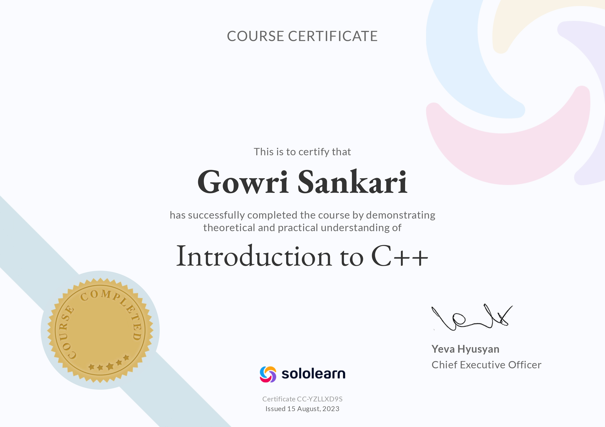
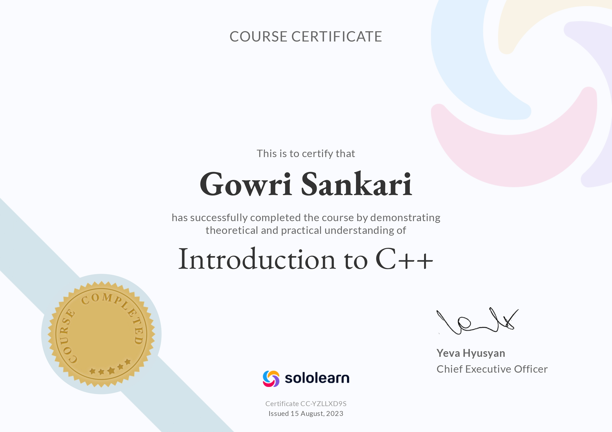
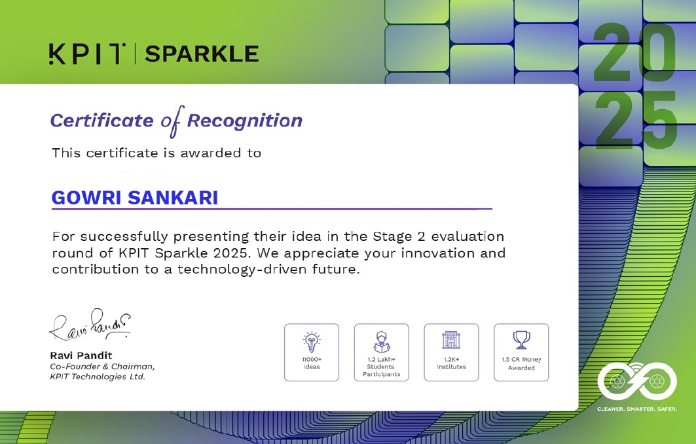
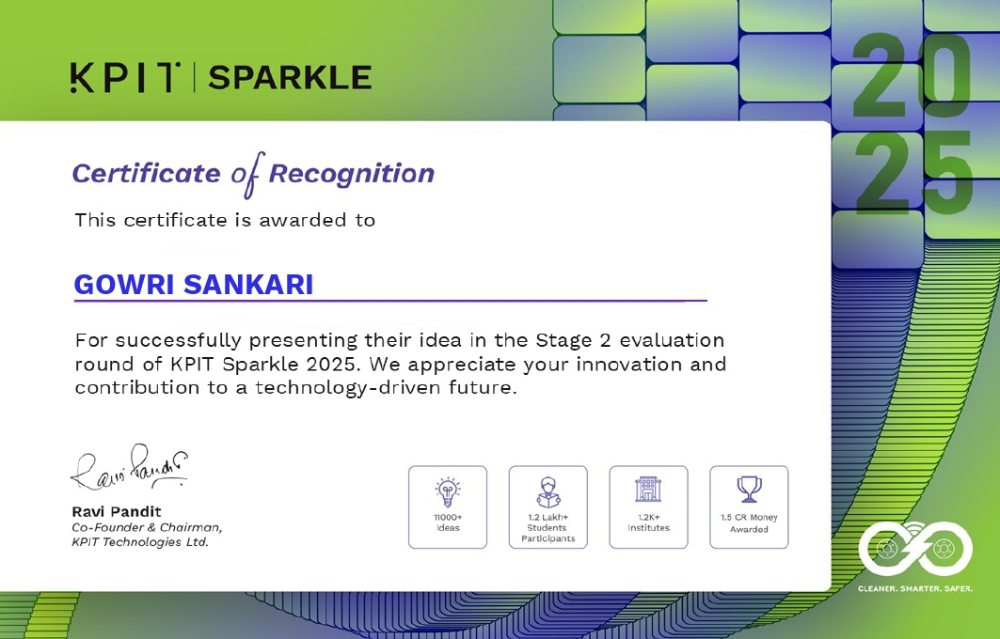

👩💻 Gowri Sankari K
.jpg)
I'm Gowri Sankari K from Arani, Tamil Nadu — a passionate Electronics and Communication Engineering student specializing in IoT, with a drive to build real-world tech solutions through innovation and collaboration.
I'm Gowri Sankari K from Arani, Tamil Nadu — a passionate Electronics and Communication Engineering student specializing in IoT, with a drive to build real-world tech solutions through innovation and collaboration.
My name is Gowri Sankari K, and I'm from Arani, Tamil Nadu.
I participated in the Smart India Hackathon (SIH) 💡, collaborating with a team to design real-time solutions for real-world challenges. This experience enhanced my 🔧 technical problem-solving skills and my ability to work under pressure 🤝 with a team.
In addition, I co-organized a technical symposium 🛠️ in the ECE department, working closely with seniors to coordinate and manage events. I was responsible for the Hangman event 🎯, contributing significantly to its successful execution.
Outside of academics, I enjoy playing online chess ♟️ to sharpen my strategic thinking, and solving the Rubik's Cube 🔄 to boost my logical reasoning and concentration 🧠.
I'm a joyful 😊 and adaptable 🔄 individual who thrives in collaborative environments 🤗. I easily connect and gel well with others, which helps me build strong team dynamics and maintain a positive atmosphere 🌟 wherever I go.
My ability to adapt quickly to new situations and work with different personalities has consistently helped me contribute effectively to group projects, internships, and technical events 🧑💻📚.
Bachelor of Engineering (B.E.) in Electronics and Communication Engineering (ECE)
Specialization: Internet of Things (IoT)
Institution: RMK College of Engineering and Technology (RMKCET), Tamil Nadu
Status: Pre-final year student (Expected Graduation: 2026)
Higher Secondary Education (HSC)
Government Girls Higher Secondary School, Arani
Percentage: 86%
Board: Tamil Nadu State Board
Secondary School Leaving Certificate (SSLC)
Government Girls Higher Secondary School, Arani
Percentage: 81%
Board: Tamil Nadu State Board
_page-0001.jpg) 

 



I completed a one-month internship at Edify Techno Solutions,
Vadapalani, focused on IoT, sensor interfacing, and Arduino. I built
mini-projects like:
- LDR for light control
- IR Sensor for object detection
- Gas & Fire sensors with LCD
- LED blinking automation
- Blynk-based IoT control
I collaborated with teammates, improved technical and teamwork skills,
and became more confident with embedded systems.
Description: Developed a compact, low-power AI accelerator system designed for edge computing applications. The project integrates hardware and software components to enable real-time AI inference directly on edge devices, minimizing energy consumption ⚡ while maintaining high accuracy 🎯 and performance 🚀. This solution is particularly suited for environments where power efficiency and fast data processing are critical, such as industrial automation 🏭, surveillance 🎥, and IoT applications 🌐.
Technologies Used: *Google Coral USB Accelerator with Edge TPU ⚙️ for hardware AI acceleration *Raspberry Pi 4 as the edge computing platform *YOLOv8 (You Only Look Once, version 8) 🤖 — custom-trained object detection model for real-time human detection 👁️ *TensorFlow Lite ⚡ for optimized, low-latency AI model inference on edge devices *Python 🐍 for programming and system integration *Camera module 📷 for real-time video capture and processing
Impact: *Energy Efficiency 💡: Reduced power consumption compared to traditional cloud-based AI processing by performing inference locally at the edge, extending battery life 🔋 and lowering operational costs 💰. *Real-Time Processing ⏱️: Enabled fast, accurate detection with low latency, critical for safety and surveillance systems 🚨. *Scalability 📈: The system’s modular design allows deployment across various edge devices in different industries, enhancing automation and monitoring capabilities 🤝. *Cost-Effective 🏷️: Reduced dependency on continuous network connectivity 🌍 and cloud resources ☁️, making AI solutions more accessible in remote or resource-constrained settings.
View Internship Presentation (PPT)